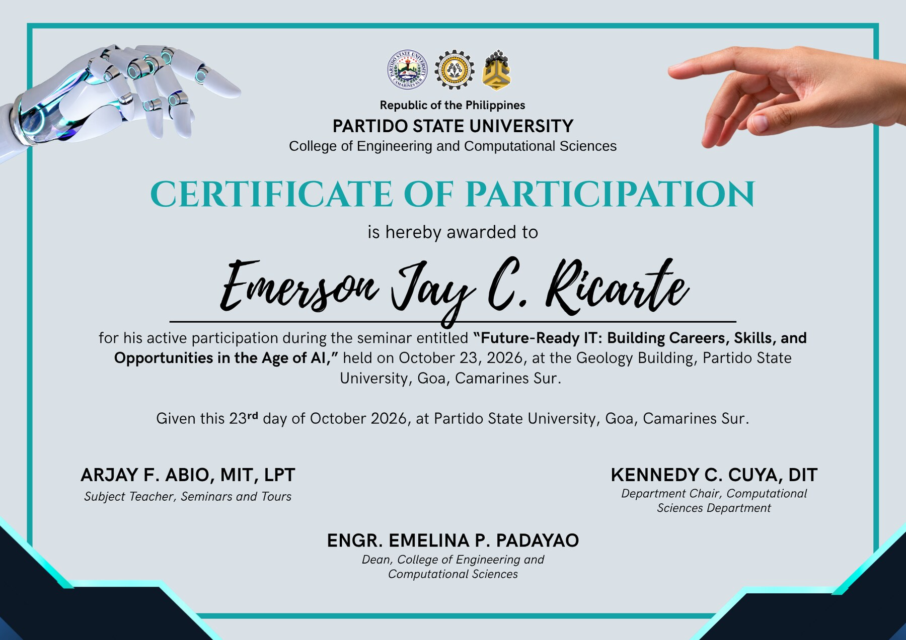
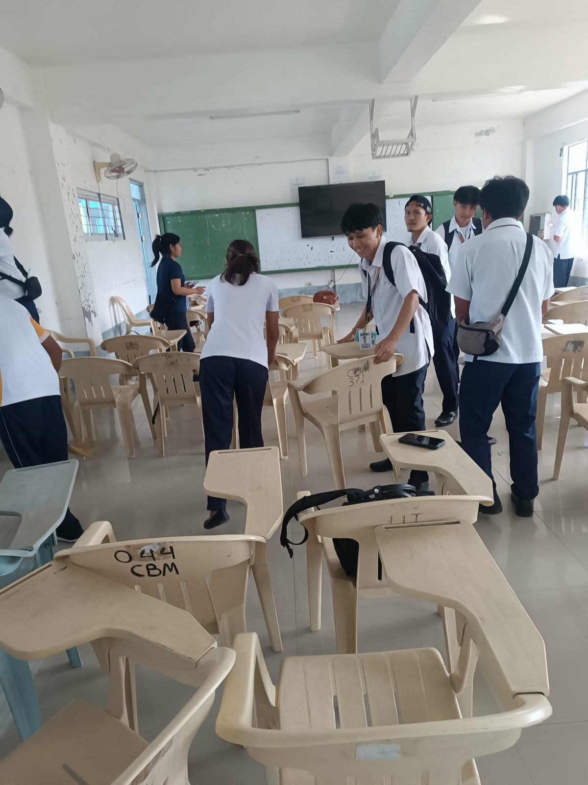
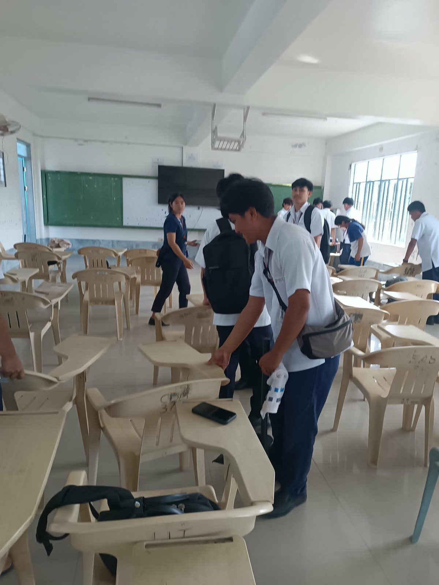
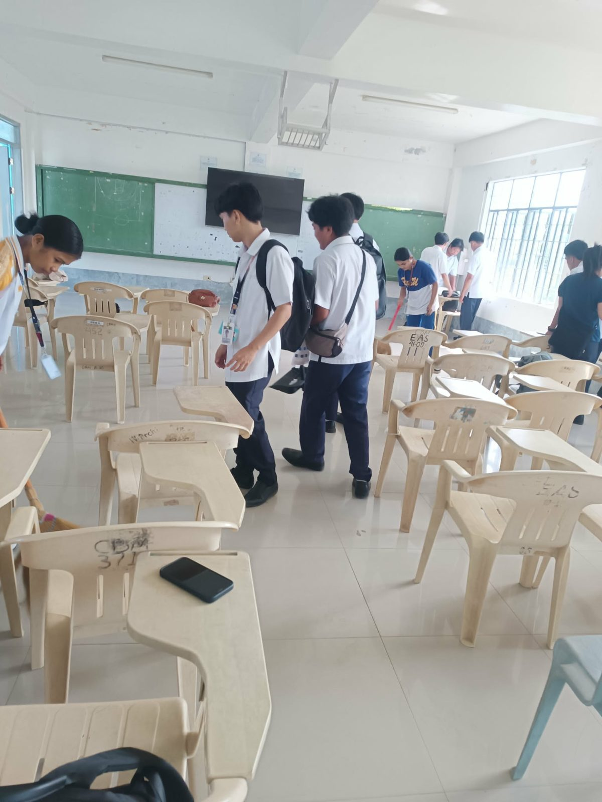

Group photo — Future-Ready IT Seminar, with the participants and guests

Certificate of Participation — Future-Ready IT: Building Careers, Skills, and Opportunities in the Age of AI, Partido State University, October 23, 2026
On October 23, 2026, I attended “Future-Ready IT: Building Careers, Skills, and Opportunities in the Age of AI,” a seminar organized by our BSIT 4B class and held at the Geology Building of Partido State University in Goa, Camarines Sur. The program ran from 8:00 AM to 5:00 PM and featured two speakers: Jeremy Zion L. Jamer, an IT instructor, and Jemuel M. Lupo, Chief Technology Officer of Core AI Tech Solutions. As a fourth-year student getting ready to graduate, I found the topic timely and relevant.
Tools will keep changing. The habit of learning is what stays.
The first talk, delivered by Jeremy Zion L. Jamer, focused on the skills and mindset that an IT graduate needs when entering the industry. It reminded us that a degree is only a starting point, and that technical knowledge has to be paired with adaptability, critical thinking, and good communication if we want to grow in this field.
The second talk, by Jemuel M. Lupo of Core AI Tech Solutions, looked at artificial intelligence from an industry point of view. Hearing from a working technology leader made it clear that AI is already part of how companies build products, hire people, and solve problems. Graduates who learn to work with AI, instead of avoiding it, will have an advantage.
The seminar’s visual theme, a robotic hand reaching toward a human hand, which also appears on our certificate, summed up the message well. The future of IT is a partnership between people and technology, not a competition between them.
I am thankful to BSIT 4B, the two speakers, our Seminars and Tours instructor, and the College of Engineering and Computational Sciences for making this event possible. The seminar gave me a clearer picture of what to prepare for after graduation: keep learning, build real projects, and treat AI as a tool to work with.
A degree is a starting point; staying employable means learning continuously.
Technical skills work best together with adaptability, critical thinking, and communication.
AI is already part of real workplaces, and learning to work with it is an advantage.
The future of IT is people and technology working together.
Behind-the-scenes photos of our class preparing the room for the Future Ready IT Seminar.


